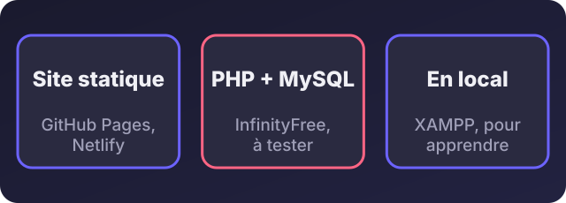
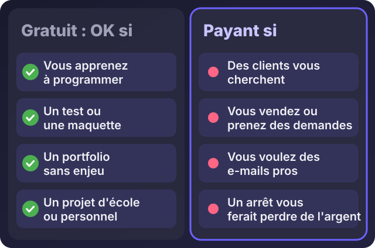

Hébergement web gratuit et hébergement PHP gratuit : que choisir (et que faut-il éviter) ?

Écouter cet article · environ 4 min
« Y a-t-il un hébergement gratuit pour mon site ? » La réponse est oui, mais « gratuit » ne veut pas dire « sans conséquence ». Voici ce qui existe vraiment, ce qu'il permet, et à partir de quand il faut payer.
Ce que « gratuit » veut dire
Un hébergeur gratuit ne vous donne pas de l'argent : il vous offre un petit espace en échange de quelque chose. Cela peut être de la publicité sur votre site, des limites très strictes, ou l'espoir que vous passerez à une offre payante. Il peut aussi disparaître ou changer ses règles du jour au lendemain. Un exemple connu : 000webhost, un hébergeur gratuit très utilisé, a fermé en 2024 selon plusieurs sources.
Trois pistes selon votre projet

1. Un site statique (HTML, CSS, JavaScript)
C'est le cas d'un portfolio, d'une page de présentation, d'un site sans base de données. Ici, le gratuit est fiable et rapide :
- GitHub Pages, très simple si votre code est déjà sur GitHub.
- Netlify et Cloudflare Pages proposent aussi des offres gratuites pour les sites statiques.
Ces services n'exécutent pas de PHP. Pour des fonctions comme un formulaire qui enregistre des données, il faut passer par un autre service ou une autre solution.
2. PHP et MySQL
C'est le cas d'un site dynamique : espace d'administration, formulaire qui enregistre, base de données. Les offres gratuites avec PHP et MySQL existent, mais elles sont rares et fragiles. InfinityFree en est un exemple qui existe toujours. Ses limites changent et sont volontairement serrées : lisez les conditions actuelles sur son site avant de vous engager. Méfiez-vous des listes « meilleurs hébergements gratuits » : beaucoup sont rédigées par des sites qui touchent une commission.
3. En local, pour apprendre
Pour apprendre le PHP, vous n'avez pas besoin d'hébergeur : XAMPP installe un serveur sur votre ordinateur, et PHP sait même lancer un petit serveur de test avec une seule commande. C'est gratuit, sans limite, et sans risque.
Et pour les bases de données ?
Des services comme Supabase proposent une offre gratuite pour une base de données et une authentification. Ils sont utiles pour un petit projet, avec des limites à vérifier.
Les limites du gratuit
- Pas de garantie : une panne, une suspension ou une fermeture peuvent arriver sans prévenir.
- Performances faibles : site lent aux heures de pointe, ressources très limitées.
- Peu ou pas de support : si quelque chose casse, vous êtes seul.
- Pas d'e-mails professionnels, souvent pas de nom de domaine personnalisé.
- Sécurité et sauvegardes limitées : vos données ne sont pas forcément protégées comme il faut.
- Publicité ou règles restrictives selon les offres.

Quand le gratuit suffit
- Vous apprenez à programmer ou à faire un site.
- Vous faites un test ou une maquette.
- Vous avez un portfolio ou un projet d'école.
- Un arrêt de quelques jours ne coûterait rien.
Quand passer au payant
Dès que des clients vous cherchent, que vous vendez ou prenez des demandes par votre site, que vous voulez une adresse e-mail professionnelle, ou qu'une panne vous ferait perdre de l'argent. Un hébergement payant d'entrée de gamme coûte peu par rapport à un seul client perdu parce que votre site était en panne.
Mon conseil
- Pour apprendre ou tester, utilisez le local (XAMPP) ou un hébergement statique gratuit.
- Pour un site d'entreprise, passez à un hébergement mutualisé fiable, avec votre propre nom de domaine.
- Pour une application sur mesure, pensez à un VPS : on en parle dans l'article suivant.
- Dans tous les cas, gardez une sauvegarde de votre site et de vos données hors de l'hébergeur.
Besoin d'aide pour choisir, installer ou migrer votre site ? Écrivez-moi sur WhatsApp : je vous dis si le gratuit suffit pour votre projet, ou ce qu'il vous faut vraiment.